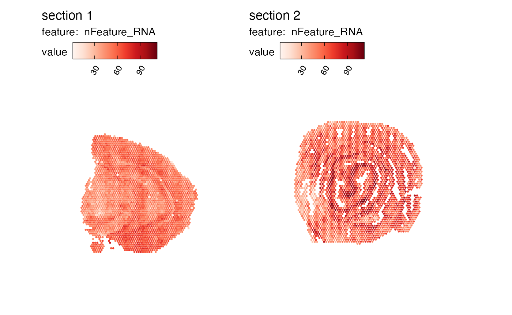

Create dataset
Last compiled: 19 March 2025
create_object.RmdIn this notebook, we’ll have a look at how you can create a
Seurat object compatible with semla.
Load coordinates
The Staffli object requires image and coordinate data
that can be retrieved from the spaceranger output files.
Below we’ll use the mouse brain and mouse colon example data:
he_imgs <- c(system.file("extdata/mousebrain",
"spatial/tissue_lowres_image.jpg",
package = "semla"),
system.file("extdata/mousecolon",
"spatial/tissue_lowres_image.jpg",
package = "semla"))
spotfiles <- c(system.file("extdata/mousebrain",
"spatial/tissue_positions_list.csv",
package = "semla"),
system.file("extdata/mousecolon",
"spatial/tissue_positions_list.csv",
package = "semla"))
jsonfiles <- c(system.file("extdata/mousebrain",
"spatial/scalefactors_json.json",
package = "semla"),
system.file("extdata/mousecolon",
"spatial/scalefactors_json.json",
package = "semla"))When loading coordinates from multiple samples, you need to change
the barcode IDs so that the suffix matches their respective sampleID.
For instance, a barcode in sample 1 might be called CATACAAAGCCGAACC-1
and in sample 2 the same barcode should be CATACAAAGCCGAACC-2. The
coordinates tibble below contains the barcode IDs, the
pixel coordinates and a column with the sampleIDs.
semla provides LoadSpatialCoordinates to
make the task a little easier. Note that the suffix for the barcodes
have changed for sample 2.
# Read coordinates
coordinates <- LoadSpatialCoordinates(spotfiles) |>
select(all_of(c("barcode", "pxl_col_in_fullres", "pxl_row_in_fullres", "sampleID")))## ℹ Loading coordinates:## → Finished loading coordinates for sample 1## → Finished loading coordinates for sample 2## ℹ Collected coordinates for 5164 spots.
head(coordinates, n = 2)## # A tibble: 2 × 4
## barcode pxl_col_in_fullres pxl_row_in_fullres sampleID
## <chr> <int> <int> <int>
## 1 CATACAAAGCCGAACC-1 6086 4117 1
## 2 CTGAGCAAGTAACAAG-1 5062 4472 1
tail(coordinates, n = 2)## # A tibble: 2 × 4
## barcode pxl_col_in_fullres pxl_row_in_fullres sampleID
## <chr> <int> <int> <int>
## 1 GAAGGAGTCGAGTGCG-2 4854 6829 2
## 2 TGACCAAATCTTAAAC-2 4957 6829 2
# Check number of spots per sample
table(coordinates$sampleID)##
## 1 2
## 2560 2604Fetch image info
Next, we’ll fetch meta data for the sample H&E images. Here, the
tibble must contain the width and height of he_imgs as well
as a sampleID column. Use LoadImageInfo to load the image
info:
# Create image_info
image_info <- LoadImageInfo(he_imgs)
image_info## # A tibble: 2 × 9
## format width height colorspace matte filesize density sampleID type
## <chr> <int> <int> <chr> <lgl> <int> <chr> <chr> <chr>
## 1 JPEG 565 600 sRGB FALSE 106233 +72x+72 1 tissue_lowres
## 2 JPEG 600 541 sRGB FALSE 141710 +72x+72 2 tissue_lowresDefine image dimensions
The jsonfiles contain scaling factors that allows us to
find the original H&E image dimensions. We can load the scale
factors with read_json and store them in a tibble. The
tibble should also contain a ‘sampleID’ column. Use
LoadScaleFactors to load the scaling factors:
# Read scalefactors
scalefactors <- LoadScaleFactors(jsonfiles)
scalefactors## # A tibble: 2 × 5
## spot_diameter_fullres tissue_hires_scalef fiducial_diameter_fullres
## <dbl> <dbl> <dbl>
## 1 143. 0.104 215.
## 2 67.0 0.202 108.
## # ℹ 2 more variables: tissue_lowres_scalef <dbl>, sampleID <chr>Once we have the scale factors, we can add additional columns to
image_info which specify the dimensions of the original
H&E images. Use UpdateImageInfo to update
image_info with the scaling factors:
# Add additional columns to image_info using scale factors
image_info <- UpdateImageInfo(image_info, scalefactors)
image_info## # A tibble: 2 × 10
## format width height full_width full_height colorspace filesize density
## <chr> <int> <int> <dbl> <dbl> <chr> <int> <chr>
## 1 JPEG 565 600 18120. 19242. sRGB 106233 +72x+72
## 2 JPEG 600 541 9901. 8927. sRGB 141710 +72x+72
## # ℹ 2 more variables: sampleID <chr>, type <chr>Finally, we are ready to create the Staffli object. Here
we’ll provide the he_imgs so that we can load the images
later with LoadImages. The coordinates are
stored in the meta_data slot. image_info will
be used by the plot functions provided in semla to define
the dimensions of the plot area.
# Create Staffli object
staffli_object <- CreateStaffliObject(imgs = he_imgs,
meta_data = coordinates,
image_info = image_info,
scalefactors = scalefactors)
staffli_object## An object of class Staffli
## 5164 spots across 2 samples.Use a Staffli object in Seurat
Now let’s see how we can incorporate our Staffli object
in Seurat. First, we’ll load the gene expression matrices
for our samples and merge them.
# Get paths for expression matrices
expr_matrix_files <- he_imgs <- c(system.file("extdata/mousebrain",
"filtered_feature_bc_matrix.h5",
package = "semla"),
system.file("extdata/mousecolon",
"filtered_feature_bc_matrix.h5",
package = "semla"))Before merging the matrices, it’s important to rename the barcodes so
that they match the barcodes in Staffli_object.
exprMatList <- lapply(seq_along(expr_matrix_files), function(i) {
exprMat <- Seurat::Read10X_h5(expr_matrix_files[i])
colnames(exprMat) <- gsub(pattern = "-\\d*", # Replace barcode suffix with sampleID
replacement = paste0("-", i),
x = colnames(exprMat))
return(exprMat)
})
# Merge expression matrices
mergedExprMat <- SeuratObject::RowMergeSparseMatrices(exprMatList[[1]], exprMatList[[2]])Alternatively, use the LoadAndMergeMatrices function
from semla:
mergedExprMat <- LoadAndMergeMatrices(samplefiles = expr_matrix_files, verbose = FALSE)
# Create Seurat object
se <- SeuratObject::CreateSeuratObject(counts = mergedExprMat)Rearrange Staffli object to match Seurat
object. If the barcode are mismatched, make sure to subset the two
object to contain intersecting barcodes.
staffli_object@meta_data <- staffli_object@meta_data[match(colnames(se), staffli_object@meta_data$barcode), ]Check that the Staffli object matches
Seurat object:
## [1] TRUEPlace Staffli object in the Seurat
object:
se@tools$Staffli <- staffli_objectNow the semla functions should be compatible with the
Seurat object!
MapFeatures(se, features = "nFeature_RNA")
se <- LoadImages(se, verbose = FALSE)
MapFeatures(se, features = "nFeature_RNA", image_use = "raw", override_plot_dims = TRUE)Package version
-
semla: 1.3.1
Session info
## R version 4.3.3 (2024-02-29)
## Platform: aarch64-apple-darwin20.0.0 (64-bit)
## Running under: macOS 15.3
##
## Matrix products: default
## BLAS/LAPACK: /Users/javierescudero/miniconda3/envs/r-semla/lib/libopenblas.0.dylib; LAPACK version 3.12.0
##
## locale:
## [1] en_US.UTF-8/en_US.UTF-8/en_US.UTF-8/C/en_US.UTF-8/en_US.UTF-8
##
## time zone: Europe/Stockholm
## tzcode source: internal
##
## attached base packages:
## [1] stats graphics grDevices utils datasets methods base
##
## other attached packages:
## [1] tibble_3.2.1 jsonlite_1.8.8 magick_2.8.3 semla_1.3.1
## [5] ggplot2_3.5.0 dplyr_1.1.4 SeuratObject_5.0.1 Seurat_4.3.0.1
##
## loaded via a namespace (and not attached):
## [1] RColorBrewer_1.1-3 rstudioapi_0.15.0 magrittr_2.0.3
## [4] spatstat.utils_3.0-5 farver_2.1.1 rmarkdown_2.26
## [7] fs_1.6.3 ragg_1.3.3 vctrs_0.6.5
## [10] ROCR_1.0-11 memoise_2.0.1 spatstat.explore_3.2-6
## [13] htmltools_0.5.7 forcats_1.0.0 sass_0.4.8
## [16] sctransform_0.4.1 parallelly_1.38.0 KernSmooth_2.23-22
## [19] bslib_0.6.1 htmlwidgets_1.6.4 desc_1.4.3
## [22] ica_1.0-3 plyr_1.8.9 plotly_4.10.4
## [25] zoo_1.8-12 cachem_1.0.8 igraph_2.0.2
## [28] mime_0.12 lifecycle_1.0.4 pkgconfig_2.0.3
## [31] Matrix_1.6-3 R6_2.5.1 fastmap_1.1.1
## [34] fitdistrplus_1.1-11 future_1.34.0 shiny_1.8.0
## [37] digest_0.6.34 colorspace_2.1-0 patchwork_1.2.0
## [40] tensor_1.5 irlba_2.3.5.1 textshaping_0.3.7
## [43] labeling_0.4.3 progressr_0.14.0 fansi_1.0.6
## [46] spatstat.sparse_3.0-3 httr_1.4.7 polyclip_1.10-6
## [49] abind_1.4-5 compiler_4.3.3 bit64_4.0.5
## [52] withr_3.0.0 highr_0.10 MASS_7.3-60
## [55] tools_4.3.3 lmtest_0.9-40 httpuv_1.6.14
## [58] future.apply_1.11.1 goftest_1.2-3 glue_1.7.0
## [61] dbscan_1.1-12 nlme_3.1-164 promises_1.2.1
## [64] grid_4.3.3 Rtsne_0.17 cluster_2.1.6
## [67] reshape2_1.4.4 generics_0.1.3 hdf5r_1.3.10
## [70] gtable_0.3.4 spatstat.data_3.0-4 tidyr_1.3.1
## [73] data.table_1.15.2 sp_2.1-3 utf8_1.2.4
## [76] spatstat.geom_3.2-9 RcppAnnoy_0.0.22 ggrepel_0.9.5
## [79] RANN_2.6.1 pillar_1.9.0 stringr_1.5.1
## [82] spam_2.10-0 later_1.3.2 splines_4.3.3
## [85] lattice_0.22-5 bit_4.0.5 survival_3.5-8
## [88] deldir_2.0-4 tidyselect_1.2.0 miniUI_0.1.1.1
## [91] pbapply_1.7-2 knitr_1.45 gridExtra_2.3
## [94] scattermore_1.2 xfun_0.42 matrixStats_1.2.0
## [97] stringi_1.8.3 lazyeval_0.2.2 yaml_2.3.8
## [100] evaluate_0.23 codetools_0.2-19 cli_3.6.2
## [103] uwot_0.1.16 xtable_1.8-4 reticulate_1.35.0
## [106] systemfonts_1.0.5 munsell_0.5.0 jquerylib_0.1.4
## [109] Rcpp_1.0.12 globals_0.16.3 spatstat.random_3.2-3
## [112] zeallot_0.1.0 png_0.1-8 parallel_4.3.3
## [115] ellipsis_0.3.2 pkgdown_2.0.7 dotCall64_1.1-1
## [118] listenv_0.9.1 viridisLite_0.4.2 scales_1.3.0
## [121] ggridges_0.5.6 leiden_0.4.3.1 purrr_1.0.2
## [124] rlang_1.1.3 cowplot_1.1.3 shinyjs_2.1.0